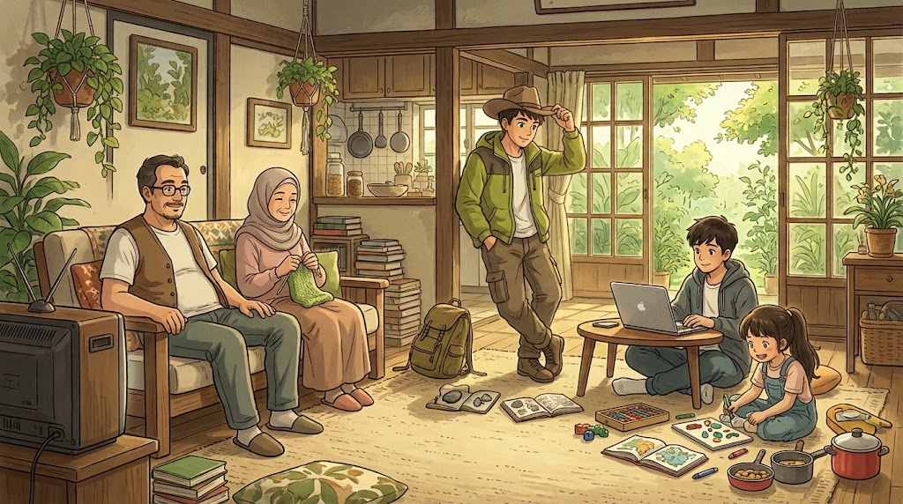

Harmoni & Kebersamaan
"Rumah bukan hanya sekedar tempat tinggal, melainkan tempat di mana kita tumbuh dan cerita bermula."

( Ilustrasi Kebersamaan Keluarga )
|
|
Biodata Anggota Keluarga
Klik nama untuk membuka detail biodata:
Moch. Mawar Dinar Fauzan (Kepala Keluarga)
| Umur | 48 Tahun |
| Peran | Kepala Keluarga / Ayah |
| Hobi Utama | Nonton Dracin (Drama China) |
| Karakter | Pengayom, bijaksana, dan humoris |
Siti Syarah (Ibu)
| Umur | 43 Tahun |
| Peran | Ibu Rumah Tangga |
| Hobi Utama | Memasak, beres-beres rumah, Nonton Dracin |
| Keahlian | Masakannya enak dan menjaga kehangatan rumah |
Alam Akash Samudra (Anak Pertama)
| Umur | 20 Tahun |
| Peran | Anak Sulung |
| Hobi Utama | Explore Alam, mengenal hal baru, exercise |
| Status | Mahasiswa Sistem Informasi |
Ibnu Fasya Al Fadil (Anak Kedua)
| Umur | 15 Tahun |
| Peran | Anak Kedua |
| Hobi Utama | Main Game, freelancing |
Syafa Atul Maulida (Anak Ketiga)
| Umur | 10 Tahun |
| Peran | Anak Bungsu |
| Hobi Utama | Main-mainan, masak-masakan, menggambar |
|
|
|